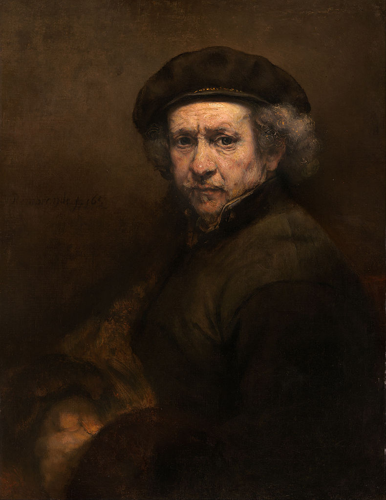

Rembrandt Harmenszoon van Rijn
伦勃朗・哈尔曼松・范・莱因 1606.07.15 - 1669.10.04

Figure 1: 肖像画
欧洲巴洛克绘画艺术的代表画家之一，也是 17 世纪荷兰黄金时代绘画的主要人物，被称为荷兰历史上最伟大的画家；在 2004 年票选最伟大的荷兰人当中，他排名第九，次于第八的安妮・法兰克。他所处的年代被称为荷兰黄金时代，荷兰的科学艺术与商贸成就达到顶峰。
伦勃朗年少成名，其作品在他在世时即享有盛名，几乎当时所有重要的荷兰画家都出自他的门下。伦勃朗的顶峰之作当属肖像画包括自画像以及取自圣经内容的绘画。他的一系列自画像如同一部独一无二的自传，画家的自我审视真诚而不矫饰。在油画和版画创作中，伦勃朗展现了他对古典意象的完美把握，同时加入了他自身的经验和观察。比如圣经场景的绘画中，同时体现了他对圣经文本的理解，对古典构图的运用，以及他对阿姆斯特丹犹太族群的观察。
在伦勃朗的作品中，明暗对照法得到了充分的运用，着重捕捉光线和阴影的绘画技术让人物栩栩如生。与同时代的画家不同，伦勃朗表现的并非是人物的美貌或财富，而是经过深刻洞察后的人性与内在心理。写实的呈现方式，毫不掩饰时间与岁月在模特身上留下的印记是伦勃朗作品的一大特点。他的作品题材多样，从经典的历史场景，故事传说到日常生活场景与人像。他的两任妻子， 莎斯姬亚・伦勃朗与斯托芬，经常成为他作品中女性人物的原型。
伦勃朗于 1606 年 7 月 15 日生在荷兰共和国时期的莱顿。他是家中第八个孩子，父亲是磨坊主，母亲是面包师的女儿，他们共育有十个孩子。宽裕的资产阶级家庭条件让他在家乡度过了无忧无虑的童年生活。10 岁到 14 岁期间，他进入了管制严格的拉丁文学校就读，并接受了最初的美术教育，并于 14 岁进莱顿大学并主修哲学，不过他很快就放弃了在哲学方向发展的道路。
1621 年，伦勃朗决定全身心投入于绘画并在一个当地画家 Jacob van Swanenburgh 的画室中做学徒。1624 年，他获得了在荷兰当时最著名的画家彼得・拉斯特曼于阿姆斯特丹的画室中当学徒的机会并在拉斯曼手下工作了六个月。彼时，他已经基本掌握油画、素描和蚀刻画的技巧并发展了自己的风格，与同门好友扬・列文斯一起在自己的家乡莱顿开画室招徒作画，期间画了许多自画像；1631 年离开莱顿去阿姆斯特丹，30 年代就成为阿姆斯特丹的主要肖像画家。他的肖像画风格人物安排具有戏剧性，深深打动人心，他以神话和宗教故事为题材的作品供不应求。他对戏剧很感兴趣，经常利用如同舞台高光的亮色描绘在阴暗背景下的人物。1650 年代后，他的画更为宽阔有力，利用叠色使画面更加有立体感。 从 1640 年代开始，他经常到乡村漫步和作画，创作了许多反映大自然的素描和版画，风格质朴。1661 年是他作画最多的一年，1663 年以后就作画较少，结交了许多中下阶层的市民，眼界更为开阔，技巧更为成熟，创造力达到顶峰。
1642 年伦勃朗创作《夜巡》，也是他生涯的转折点之一。《夜巡》是阿姆斯特丹射击协会的一群人合资请伦勃朗绘制的。伦勃朗在这些志愿民兵的群像构图上，未依照当时军人需依身份及军衔排列的不成文规定，因此造成民兵不满，要求重画，但伦勃朗没有答应，因此告上法庭，伦勃朗因此受到许多的攻击及疏远。
伦勃朗和他的妻子莎斯姬亚・伦勃朗生有 4 个孩子，只有最小的一个存活，但他妻子在生孩子后不久去世。他和女仆斯托芬住在一起，斯托芬为他生了一个女儿，为此受到教会的谴责为 “罪恶的生活”。由于他为了画画经常采购大量的衣物和绘画工具，从不计较财产，所以很快就到了破产的边缘。1669 年他在贫病中去世，身边只有女儿陪伴，死后葬在西教堂一个无名墓地中。
伦勃朗一生留下 600 多幅油画，300 多幅蚀版画和 200 多幅素描，几乎画了 100 多幅自画像，而且几乎他所有的家人都在他的画中出现过。

Figure 2: Nature morte avec livres, 1627

Figure 3: The Supper at Emmaus, 1628

Figure 4: A Man seated reading at a Table in a Lofty Room, 1629

Figure 5: Jeremiah Lamenting the Destruction of Jerusalem, 1630

Figure 6: St. Peter in Prison, 1631

Figure 7: The abduction of Europa, 1632

Figure 8: The Anatomy Lesson of Dr Nicolaes Tulp, 1632

Figure 9: The Shipbuilder and his Wife, 1633

Figure 10: The Storm on the Sea of Galilee, 1633

Figure 11: Judith at the Banquet of Holofernes, 1634

Figure 12: An Elephant, 1637

Figure 13: The Company of Frans Banning Cocq and Willem van Ruytenburgh, known as the ‘Night Watch’, 1642

Figure 14: Christ and the Adulteress, 1644

Figure 15: The Mill, 1645-1648

Figure 16: Christ Preaching, 1649

Figure 17: The Man with the Golden Helmet, 1650

Figure 18: Aristotle with a Bust of Homer, 1653

Figure 19: A Woman Bathing in a Stream, 1655

Figure 20: The Polish Rider, 1655

Figure 21: Moses Breaking the Tablets of the Law, 1659

Figure 22: Rembrandt’s Son Titus in a Monk’s Habit, 1660

Figure 23: Lucretia, 1664